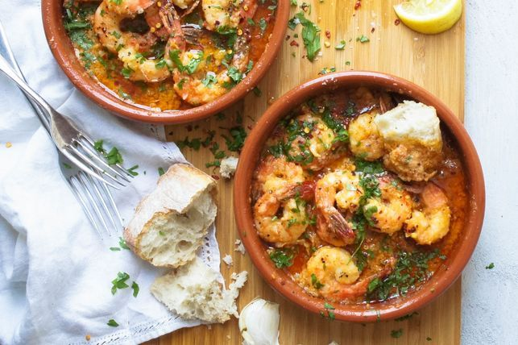

Spanish Garlic Prawns

Description:
I first had this dish in Barcelona, Spain during my European backpacking journey.
It is very simple and elegant dish that packs tons of flavor and goes well with any drinks.
Ingredients:
- Prawns, peeled.
- Lots of chopped garlic
- Chopped parsley
- Extra virgin olive oil
- Paprika
- Chilli
Steps:
- On medium heat add extra virgin olive oil preheat the pan
- Add prawns to cook on both side. Once cooked add chopped garlic
- Becareful not to burn the garlic and season with salt
- Add paprika and chopped chilli for heat but not necessary
- Turn the heat off and add toss with chopped parsley
- Plate and serve with toasted bread or as is